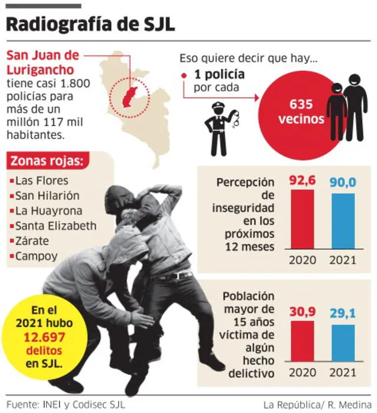

Introducción
San Juan de Lurigancho es uno de los distritos más grandes y poblados de Lima, Perú.
En los últimos años, la delincuencia se ha convertido en un problema significativo, afectando la seguridad y calidad de vida de sus residentes.
Este sitio web explora las diversas facetas de la delincuencia en el distrito y las medidas que se están tomando para combatirla.
Historia
La delincuencia en San Juan de Lurigancho ha evolucionado con el tiempo.
Durante las últimas décadas, factores como la urbanización rápida, el desempleo y la falta de oportunidades educativas han contribuido al aumento de la criminalidad.
La migración interna también ha jugado un papel importante, trayendo consigo diversos desafíos sociales y económicos.
Tipos de Delincuencia
En San Juan de Lurigancho, los delitos más comunes incluyen:
- Robos a mano armada
- Asaltos en transporte público
- Tráfico de drogas
- Extorsión
- Hurtos
Estos delitos afectan tanto a residentes como a visitantes y contribuyen a un ambiente de inseguridad generalizada.
Estadísticas
Las estadísticas recientes muestran un aumento preocupante en la tasa de criminalidad en San Juan de Lurigancho. Según datos oficiales:
- Los robos a mano armada han aumentado un 15% en el último año.
- Los asaltos en transporte público se han incrementado un 20%.
- El tráfico de drogas sigue siendo un problema persistente, con varias redadas y arrestos en la zona.
Estos datos subrayan la necesidad de una acción inmediata y eficaz para mejorar la seguridad en el distrito.

Impacto en la Comunidad
La delincuencia tiene un impacto significativo en la vida diaria de los residentes de San Juan de Lurigancho. Entre los efectos más notables se encuentran:
- Miedo constante y desconfianza hacia extraños.
- Reducción de la actividad económica debido a la inseguridad.
- Estrés y ansiedad entre los habitantes, especialmente en mujeres y ancianos.
- Pérdida de bienes materiales y, en algunos casos, vidas humanas.
Estos problemas resaltan la necesidad de implementar medidas efectivas para restaurar la paz y la seguridad en la comunidad.
Medidas y Soluciones
Para combatir la delincuencia en San Juan de Lurigancho, se están tomando varias medidas, incluyendo:
- Aumento de la presencia policial en zonas críticas.
- Implementación de programas comunitarios para jóvenes en riesgo.
- Campañas de concientización sobre la prevención del delito.
- Colaboración entre autoridades locales y organizaciones no gubernamentales.
- Inversión en infraestructura y tecnología de seguridad, como cámaras de vigilancia.
Estas acciones buscan no solo reducir la criminalidad, sino también promover un ambiente más seguro y saludable para todos los residentes.